HEALTHCARE / MULTI-ROLE PLATFORM
Provincial Healthcare Coordination Platform
An integrated platform for provincial healthcare services, designed to coordinate complex workflows across organizations and user roles.

Challenge
The platform covers health records, medical rounds, healthcare service coordination, annual examination scheduling, and health-risk alerts. It serves provincial healthcare administrators, participating organizations, and medical institutions. Previously, separate systems fragmented data and workflows. Long processes such as annual examinations created inefficient handoffs and increased the risk of missing information or incorrect operations.
Case Details
- My role:
- Lead UI/UX Designer
- Duration:
- June to October 2025
- Responsibilities:
- End-to-end process
Selected Work
The platform brings previously separate healthcare workflows into one system, allowing different roles to collaborate within clear permission boundaries.

Discovery
Requirements Alignment
Client meetings clarified three priorities:
- Improve coordination efficiency;
- Replace missing or outdated legacy functions;
- Connect systems across organizations.

Grouping Legacy-System Issues Into Four Areas
Using requirements meetings, client feedback, and legacy screens, I grouped the issues into system coordination, functional completeness, operating experience, and visual presentation. This gave the team a shared basis for the strategy that followed.
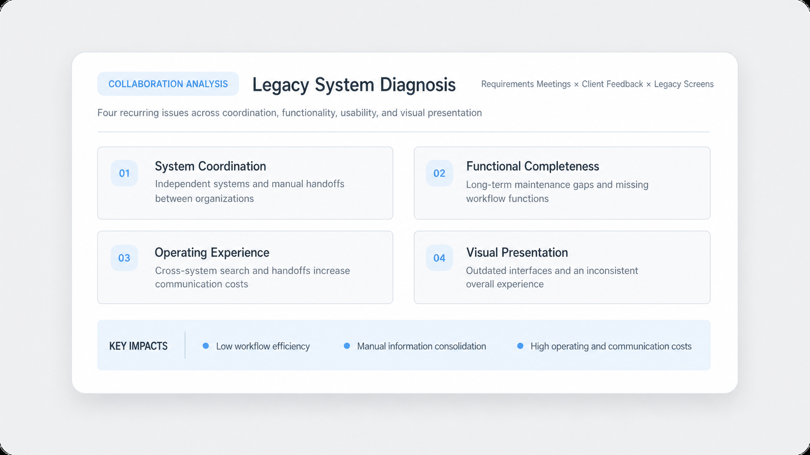
Strategy
Use one platform for cross-organization collaboration, with each account entering the workspace that matches its responsibilities.
High-Level Roadmap
Unify Tasks and Workflow Structures
First define the core tasks across roles and organizations, then align task objects, state transitions, and collaboration paths.
Standardize Page Rules and Design Guidelines
Complete the page structures and align component rules and state expressions to reduce inconsistency across parallel design and engineering delivery.
Support Continuous Delivery and Iteration
After launch, continue implementation review, issue correction, and adaptation to business changes while preserving a consistent multi-role experience.
Workflow Validation
Annual examination scheduling brings cross-organization roles into one permission-based workflow, keeping information connected across every stage.
Annual Healthcare Examination Scheduling
Five key stages move one examination task across four participating roles.
- 01Create Examination TaskProvincial Healthcare Office
- 02Allocate Examination CapacityProvincial Healthcare Office
- 03Book Examination ProviderParticipating Organization
- 04Confirm and Synchronize ScheduleHospital Healthcare Office
- 05View Examination ReportsExamination Center
Design System and Guidelines
To improve consistency and delivery efficiency across a large administration platform, I established shared components and design guidelines for designers and engineers.
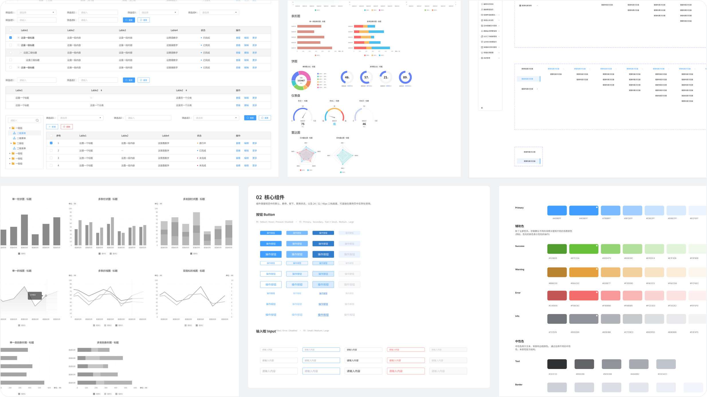
Design
From structural validation to high-fidelity delivery, these artifacts show the business decisions and system relationships behind the interface.
Healthcare Management Platform
Health Dashboard
- Major Disease Risk Prediction
Integrated Healthcare Services
- Health Record Management
- Healthcare Resource Management
- Applications and Records
- Service Coordination
- Contracted Healthcare
- Operational Reporting
- Health Monitoring and Alerts
- Healthcare Resources
Annual Examination Management
- Tasks and Capacity
- Provider and Schedule Booking
- Progress and Analysis
System Administration
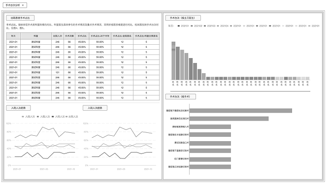


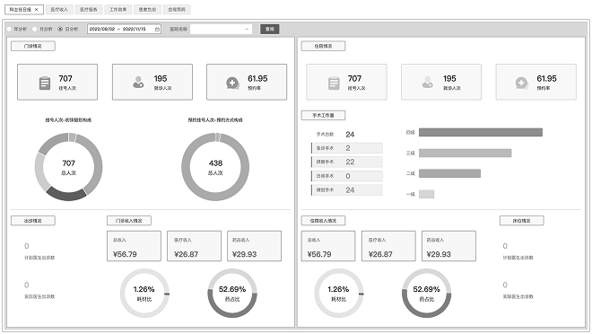
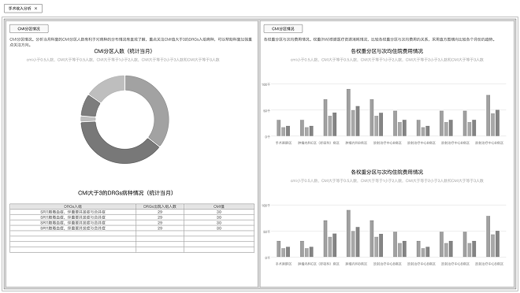

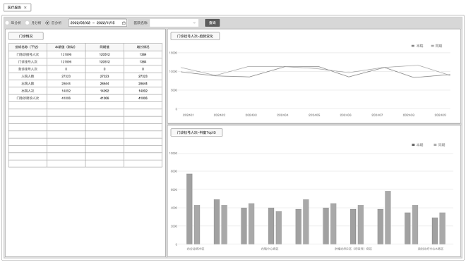


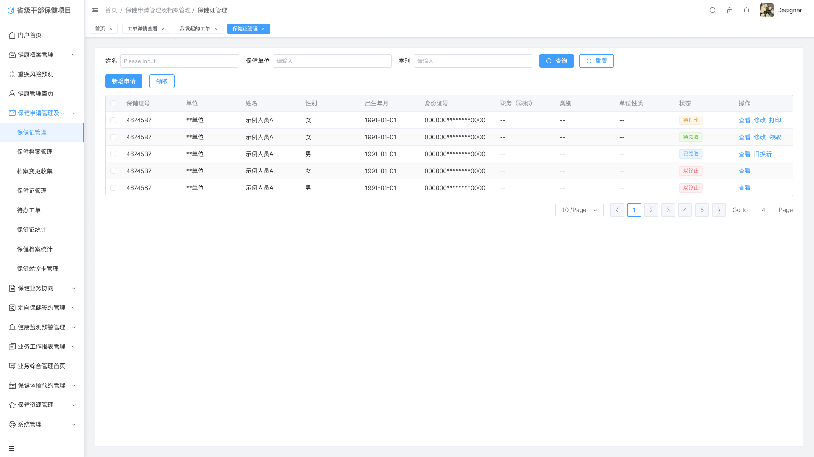
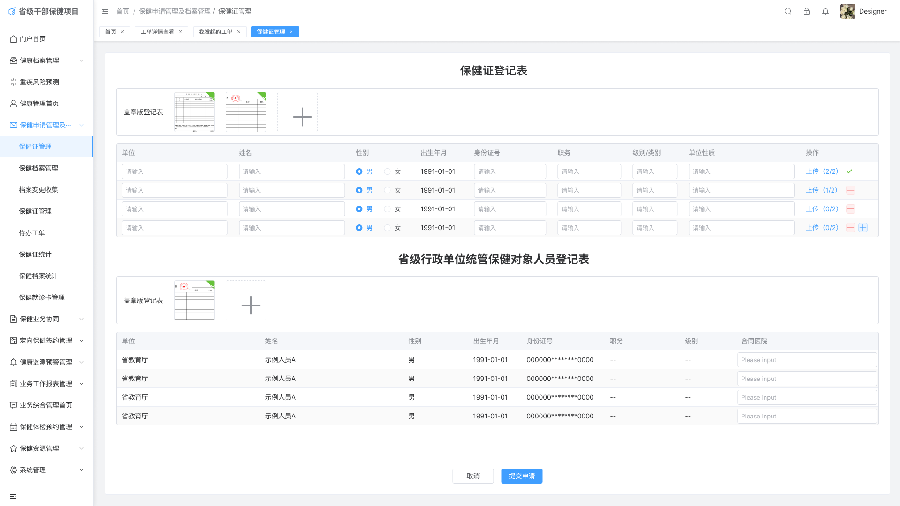
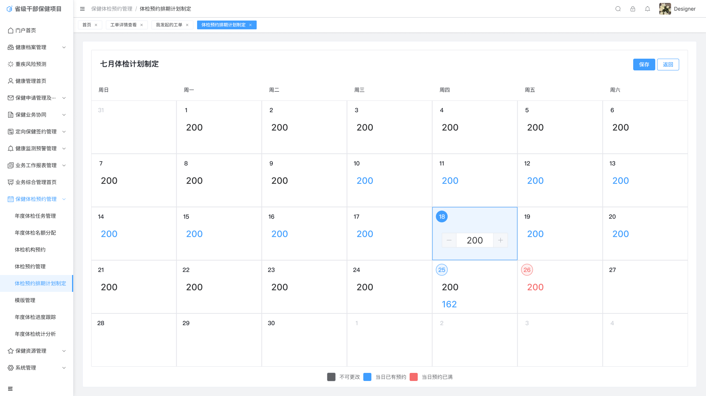
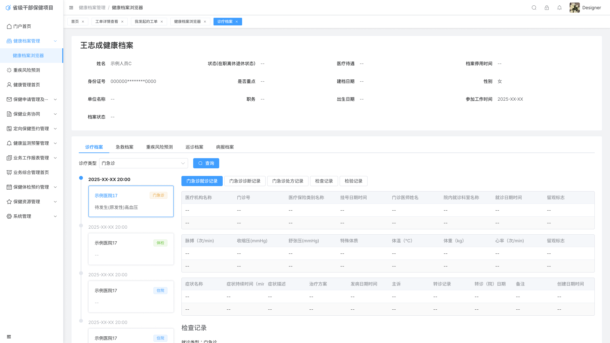

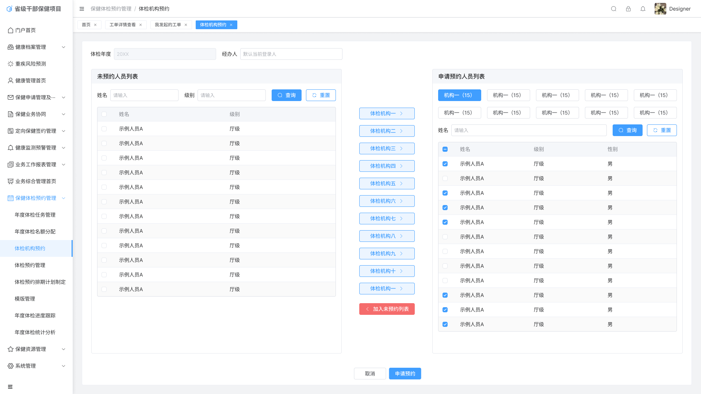
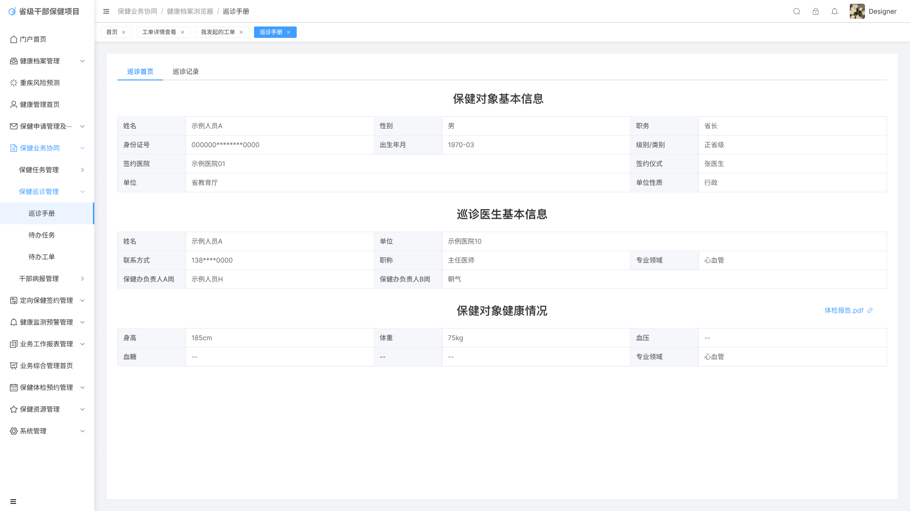
Outcomes
180+ / 120+
Project Scale and Personal Output
The project included more than 180 pages. I led approximately 120 pages and reviewed and integrated the remaining work produced by supporting designers.
3 CORE DELIVERABLE TYPES
Complete Design Delivery
The work covered information architecture, selected prototypes and wireframes, and high-fidelity UI, then extended into guidelines, production assets, engineering collaboration, and post-launch support.
Reflection
If I Started Again
I would validate multi-role workflows earlier. Before large-scale screen design, I would map roles, permissions, task states, and data flows, then confirm critical stages with low-fidelity prototypes to reduce rework caused by gaps in business understanding.
Lessons Learned
A project with more than 180 pages showed me that scaled design is not about producing more screens. It is about establishing reusable structures and rules early so designers and engineers can work to the same standard.
Trade-offs
Enterprise and public-sector systems must balance workflow efficiency, business accuracy, and data security. Even when operations are simplified, critical stages still require permission controls, state confirmation, and process records. Under delivery and engineering constraints, common components were based on Element Plus, with charts adapted using ECharts.